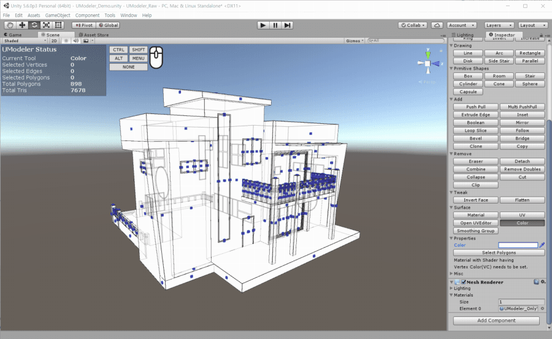
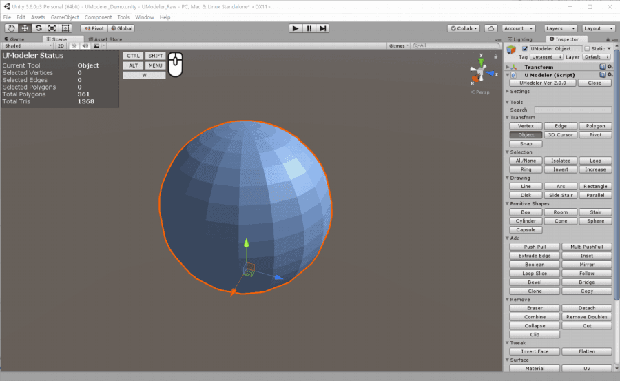

Surface Tools¶
Material Tool¶
Adds and assigns materials to the polygons.

Material Tool Demo
Properties¶
- Apply
- Assigns the Mat ID to the selected polygons.
- Select
- Selects polygons having the Mat ID.
- Add Material
- Adds a new material to the Material array below.
- Remove Material
- Removes a material.
- Materials
- Material array
UV Tool¶
Sets UV parameters such as Shift, Scale and Rotation etc to each polygon.

UV Tool Demo
Note
UV Tool doesn’t affect unwrapped polygons.
Properties¶
- Mode
- Absolute : The properties are set to the selected polygons directly
- Relative : The properties are added to the selected polygons.
- Shift
- Shift of UVs
- Scale
- Scale of UVs
- Rotation
- Rotation of UVs
- Tiling
- X : Changes texture tiling on selected surfaces in the X direction.
- Y : Changes texture tiling on selected surfaces in the Y direction.
- Fix UVs according to Tiling
- Based on Tiling properties the UVs of the selected polygons are fixed. The bigger Tiling properties are, the denser texture tiling is.
- Reset UVs
- Resets UV parameters of the selected polygons.

Color Tool¶
Sets colors to the polygons. Pressing or Dragging LMB holding SHIFT will paint a polygon below the mouse cursor in the selected color.

{kind=link}
Color Tool Demo
Note
A material with a shader supporting Vertex Color should be set to assign colors with Material Tool. Recommended materials for assigning colors(VC - Vertex Color) are as follows.
• UModelerPro_OnlyVC
• UModelerBasic_OnlyVC
Properties¶
- Color
- Color
- Select Polygons
- Selects polygons with the color in
Colorproperty.
Smoothing Group Tool¶
Manages smoothing groups for smooth shading.

{kind=link}
Smoothing Group Tool Demo
Properties¶
- Group Name
- The current smoothing group name
- Polygon Count
- The polygon count in the current smoothing group.
- Angle
- The threshold angle for
Auto Smooth. - Add Group
- Adds a new smoothing group from the current selected polygons.
- Remove Group
- Removes the current smoothing group.
- Remove Empty
- Removes smoothing groups which have no polygons.
- Select Polygons
- Selects polygons in the current smoothing group.
- Add Polygons
- Adds the selected polygons to the current smoothing group.
- Remove Polygons
- Gets rid of the selected polygons from the current smoothing group.
- Auto Smooth
Runs Auto Smooth from the selected polygons based on the value in
Angleproperty.Auto Smooth sets the smoothing groups based on the angle between faces. Any two adjacent faces are put in the same smoothing group if the angle between their normals is less than the value in
Angleproperty.